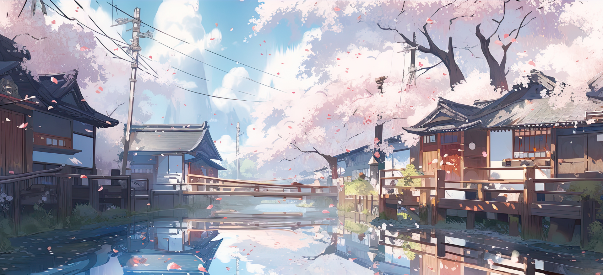

Sobre Mim

Habilidades
Projetos
Contatos



Lucas
Lucas
Tokunaga da Silva


Sobre Mim

-
Meu nome é Lucas
Tokunaga da Silva, tenho 19
anos e moro em São Roque -
SP. -
Meus hobbies são: Tocar
instrumentos musicais,
jogar com amigos e assistir
animes.

-
Me formei em Técnico em
Administração pela Etec
de São Roque em 2021. -
Estou cursando Análise e
Desenvolvimento de
Sistemas pela Fatec de
Sorocaba. -
Empenhado em aprimorar minhas habilidades de Front-
End e UX/UI.